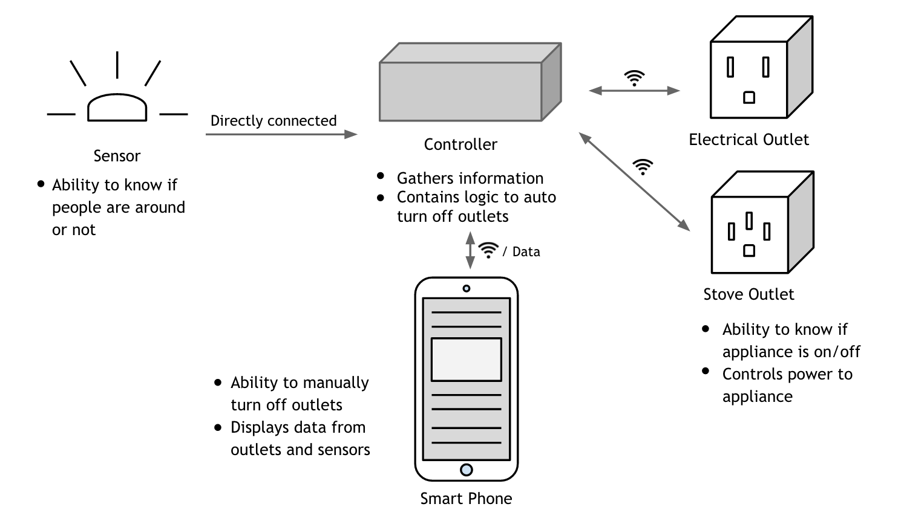
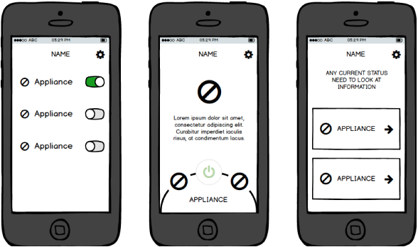

Beacon
The focus of this school project was to develop a fully functioning Internet of Things product that solves a problem in Domotics and Home Automation. Working in a group of six, we created an assistive device that prevents accidents in the kitchen by monitoring human activity and power supply of appliances. I was involved this projects from conception to prototype, and was responsible for the UX and UI design of the mobile application.
PROCESS
Following a hybrid waterfall and agile design process, I collaboratively conducted market research, held user interviews, ran surveys, created technical and functional requirements and iteratively developed a solution that satisfies the design problem. The final design goal was to create a retrofittable device which could remotely power off an appliance when left unattended.
// Application Process Flow
// Solution Brainstorm
// User Survey
Solution
The final product was a smart outlet that wirlessly communicates with a infrared/motion sensor to determine if there is a person in the vincinity of an appliance when it is powered on. The device was able to power on or off appliances remotely to prevent accidents in the home.
// Solution Blueprint
Wireframe & Workflow
As the primary designer for the mobile application, I was responsible for creating the user experienceand user interface. Developing the installation workflow and app screens required extensive iteration as the process was highly technical and required simplification.
// iPhone App wireframes
Final Product
Due to the availability of visual assets, the final application was designed for IOS. The two screens on the left are the application in its resting state. The three screens on the right show the process for installing a new appliance. I thoroughly enjoyed designing all of the kitchen appliance icons for this mobile application.
For the full week-by-week description of the project, feel free to read my Project Logbook